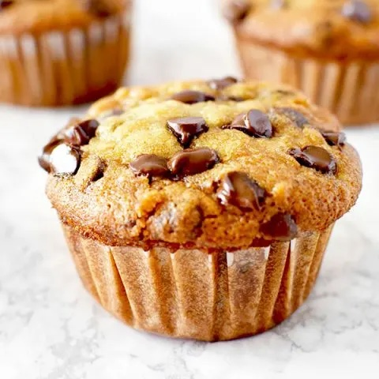

Muffins
Home

Ingredients
- 2 ripe mashed bananas
- 1/4 Cup creamy almond butter
- 2 cups of old fashioned oats
- 1/4 cup chocolate chips
Steps:
- Combine all of the ingredients together in a mixing bowl with a rubber spatula.
- The cookie dough will be more wet since there is no flour. It’s slightly more difficult to work with.
To help with this, refrigerate the dough for 15 minutes before forming into cookies.
- Scoop the dough with a medium sized cookie scoop. Place the dough in between your hands to
squeeze it together and roll it to form a dough ball. Then, gently press to flatten. Place
it on a cookie sheet lined with parchment paper. Repeat until all the dough has been used.
You can also just drop spoonfuls onto the cookie sheet and shape each spoonful into a cookie-like shape.
- 1/4 cup chocolate chips